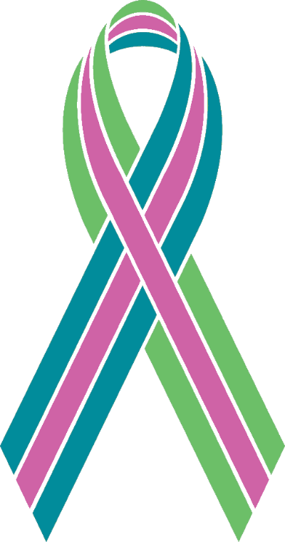
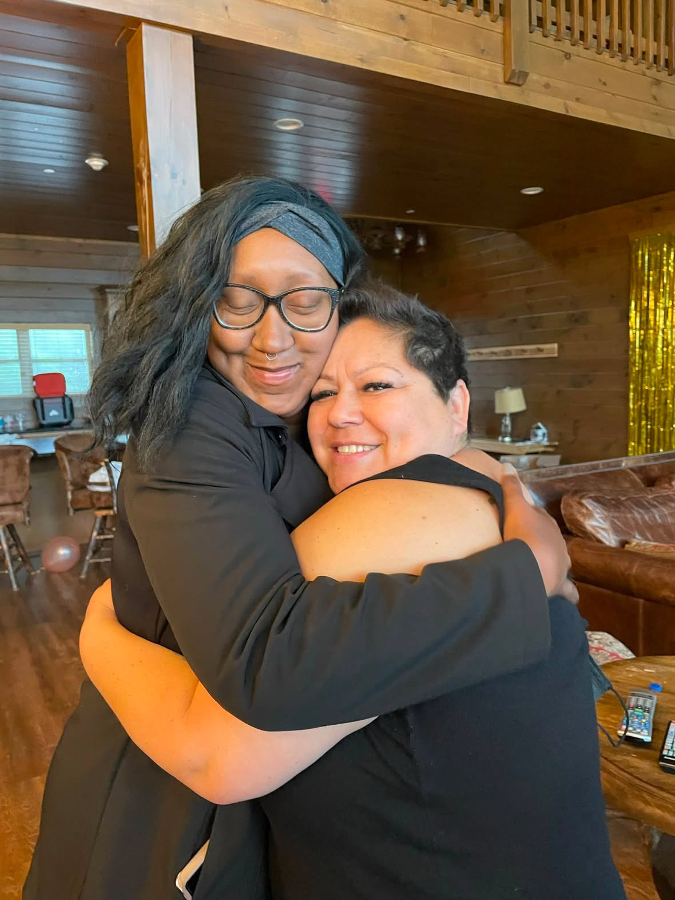
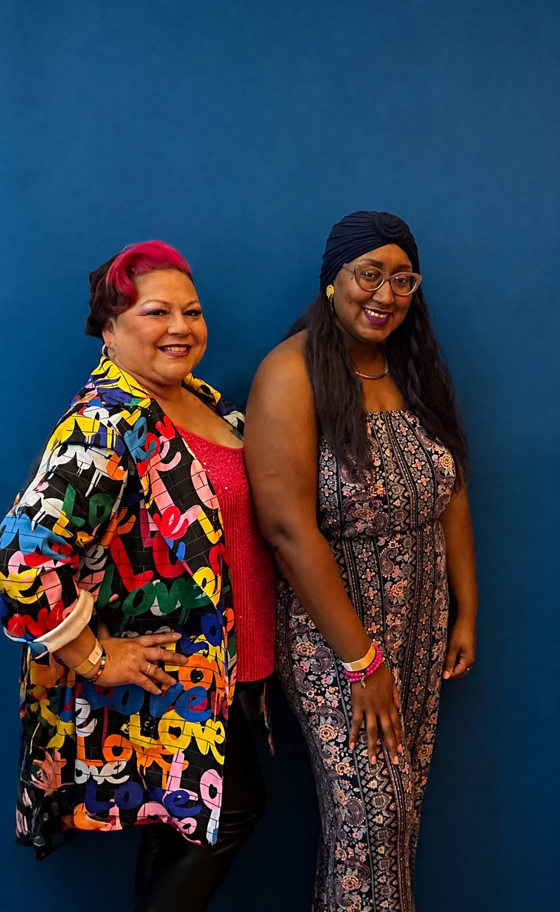

THE PLOT
SICKENS
A MOVIE REVIEW PODCAST
Two friends. Opposite sides of the country. One cancer retreat. Way too many opinions about how Hollywood gets sick people wrong — and, sometimes, beautifully right.
@theplotsickenspodcastLatest Episodes
Swipe or tap through our most recent reviews — press play on any frame to jump straight to the episode.
Funny People
Adam Sandler's cancer-diagnosis comedy-drama — the cameos, the chaos, and why you can love Adam Sandler while really not loving George Simmons.
1H 14M · NEW
The Art of Racing in the Rain
Love, loss, resilience, and the bond between a man and his dog — a cancer storyline told through racing metaphors.
1H 25M · JUL 26
Voicemails for Isabelle
Sisterhood and grief after terminal illness — and a real, moving detour into Wind Phones around the world.
1H 31M · JUL 13

One Retreat.
A Friendship Built Over Years.
Deltra and Vanessa met at a cancer retreat — two women from opposite sides of the country who probably never would have crossed paths otherwise.
We were there for the hardest reason imaginable, but somewhere between dark humor, long conversations, talking musicals and a shared love of podcasts a friendship happened.
The retreat ended, but we didn't.
We kept calling, kept texting, kept showing up for each other from across the country through scans, treatments, good news, bad news, events, everyday life, and all the strange in-between moments that come with living with metastatic breast cancer.
And somewhere along the way, we realized something else: Hollywood has a LOT to say about cancer.
Sometimes it gets it beautifully right.
Sometimes it gets it hilariously wrong.
And sometimes we find ourselves yelling at the screen, “WHO TOLD THEM THIS IS HOW THIS WORKS?!”
So eventually, we got microphones.
The Plot Sickens is where our friendship, our love of movies, and our lived experience with metastatic breast cancer all collide.
Every other week, we watch a movie where illness, cancer, grief, caregiving, or mortality plays a role — and talk about what Hollywood got right, what it got wrong, and what it was apparently too scared to show.
There will be laughs.
There will be tears.
There will almost definitely be spoilers.
And there will always be two friends telling the truth as we see it.
The metastatic breast cancer ribbon is here intentionally. Deltra and Vanessa both live with metastatic breast cancer, and this ribbon represents the community and reality they are part of every day.
For us, it isn’t branding, marketing, or pinkwashing. It’s simply a quiet acknowledgment of where this story comes from and of the people still living it.


How Every Episode Runs
Deep-Dive Reviews
We actually watch the movie — plot, performances, medical accuracy, emotional chaos and all — and talk about what worked, what didn't, and what made us yell at the screen.
Unfiltered Reactions
No script. No filter. Vanessa and Deltra talking the way we actually talk — because sometimes the movie deserves thoughtful analysis and sometimes it deserves a very loud “ARE YOU KIDDING ME?”
Laughs & Tears, Equally
We might make you laugh in one breath and reach for a tissue in the next. That's kind of the whole show.
Where to Listen
Follow along on your platform of choice — new episodes drop every other week.
FAQ
Do I need to have seen the movie first?
Nope — we recap enough for you to follow along, but yes, there will absolutely be spoilers. If you'd rather go in fresh, watch the movie first and then come back and press play on us.
Is this a cancer support or medical advice podcast?
Nope. We're not doctors, therapists, or medical professionals, and we're definitely not here to tell anyone what treatment to choose.
We're two women living with metastatic breast cancer who happen to have a lot of opinions about the way illness gets portrayed on screen.
Sometimes that gets deep. Sometimes it gets ridiculous. Usually it's both.
Do I need to have cancer to enjoy the podcast?
Absolutely not.
If you like movies, honest conversations, dark humor, friendship, or yelling at Hollywood when it gets something spectacularly wrong, you're welcome here.
Cancer gives us a particular lens, but the show is for anybody who wants to watch movies a little differently.
How often do new episodes come out?
We aim for a new episode every other week.
That said, we both live with metastatic breast cancer, so sometimes treatments, scans, appointments, fatigue, or life in general get the final say.
Basically: bi-weekly-ish, health permitting.
Follow the podcast wherever you listen and you'll know when a new episode drops.
How do you choose the movies?
Sometimes we pick movies we already know we need to talk about. Sometimes one of us finds something that looks interesting. Sometimes a movie practically throws itself at us and says, “Please dissect this.”
The main requirement is that illness, cancer, caregiving, grief, mortality, or some version of the patient experience plays a meaningful part in the story.
Can I suggest a movie?
YES.
If there's a movie you think we need to cover — especially one that made you laugh, cry, rage, or yell “THAT IS NOT HOW CANCER WORKS” — send it our way over on Instagram at @theplotsickenspodcast.
Where can I listen?
You can find The Plot Sickens on Spotify, Apple Podcasts, and wherever else we add the show as we grow.
And of course, you can always start right here on the website.
Why the metastatic breast cancer ribbon instead of the traditional pink ribbon?
Because Deltra and Vanessa both live with metastatic breast cancer.
The pink ribbon has become deeply tied to breast cancer awareness and marketing, and over the years many companies have profited from pink products and campaigns without meaningfully supporting metastatic patients, research, or the people actually living with the disease.
We want to be thoughtful about that.
The metastatic breast cancer ribbon represents the community we are actually part of, so that is the ribbon you'll see here.
Can I support the podcast?
Yes — but please know that listening, sharing an episode, following us, leaving a review, or telling a friend about the show already helps us tremendously.
If you'd like to help with the actual costs of making the podcast, we'll also have a small optional tip jar. That support goes toward things like recording software, editing tools, hosting, and the behind-the-scenes costs of keeping the show going.
No pressure. Ever.
Keep the Reel Rolling
The Plot Sickens is a labor of love, but recording, editing, hosting, and all the behind-the-scenes stuff does come with a monthly price tag.
If you enjoy the show and want to help us keep the reel rolling, you can toss a little something into the tip jar.
No pressure — listening, sharing, leaving a review, and telling a friend means just as much.
Ready to Press Play?
New episode, new movie, new mess. Come hang out with us.